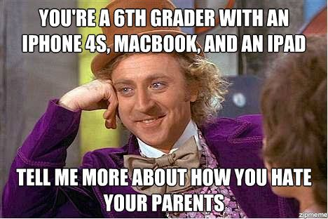

"Now that you're 30, do you find yourself having any 'Get off my lawn!' moments with today's Youth?"
by phil on Monday Aug 13, 2012 5:25 PM
Absolutely. When I was a kid, I couldn't conceive of a future version of myself that would rag on the younger generation. And yet, I was always curious what I would eventually pick on. Now that I'm 30, I think I've found them. Here's mine:
- Kids these days have everything taken care for them. Even their video games play themselves.
- Kids these days take Adderall to get good grades.
- Kids these days can't focus, and just watch random clips on YouTube, the equivalent of America's Funniest Home Videos, ad infinitum.
- Kids these days feel that socializing on facebook is completely normal.
- Kids these days don't mind being anti-social.
- Kids these days celebrate hackers who are really just identity thieves.
- Kids these days txt naked photos to each other, while in middle school.
- Kids these days think friday nights are for: "streaking in the park, skinny dipping in the dark, [and] ménage à trois".
- Kids these days don't know what an album is.
- Kids these days don't know the difference between camp and crap.
- Kids these days aspire to be Internet famous, even if it means just having a 30-second clip of them hurting themselves go viral.
- Kids these days go to online forums and call each other racist and homophobic slurs as a way to test their lack of sensitivity.
- Kids these days don't grow out of playing pranks or trolling.
- Kids these days think being offended is for losers.
- Kids these days take civil rights for granted.
I understand these are gross over-generalizations, and I'm not really upset at today's Youth, but when I get in my Get off my lawn! attitude, those are the things I gravitate towards.
